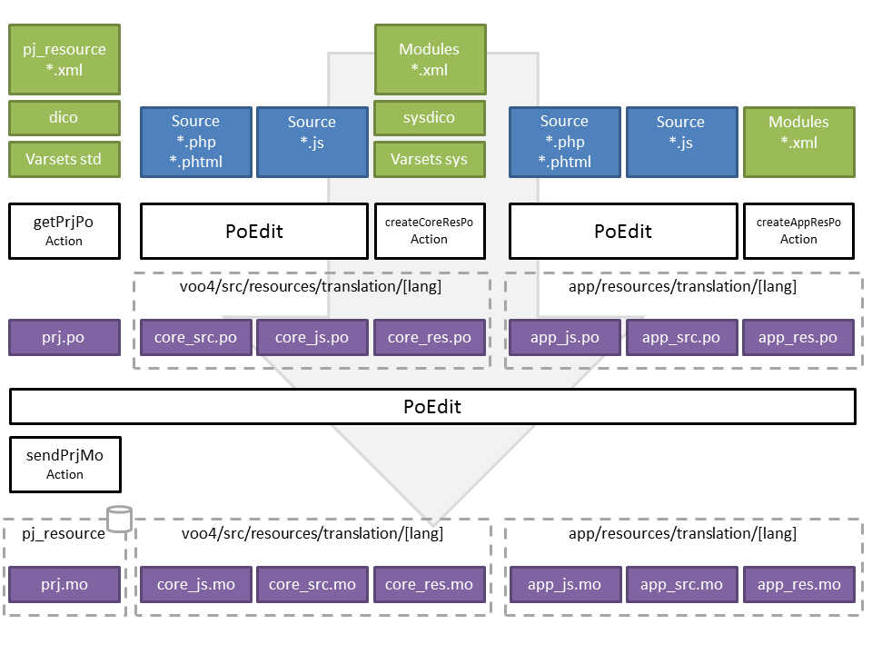

Internationalisation (I18N)¶
Mécanisme en place¶
Description des fichiers PO/MO¶
PO/MO projet
Chaque projet a son propre fichier PO/MO.
Il contient les chaînes de caractères suivantes:
- Les libellés et libellés courts des variables (uniquement des varsets standards). Le contenu de certaines variables sont aussi pris en compte (ajouter l’attribut translate=true dans la balise var). C’est utile pour traduire les varsets qui servent de dictionnaire (exemple: CIM10).
- Les dictionnaires (libellé et code)
- Les ressources de type formulaire de la table pj_resource (voozanoo extrait les chaines présentes dans le layout et la partie data structure)
Extraction fichier PO / Insertion fichier MO
- Le fichier PO est fourni par l’action translate/index/get-prj-po (le fichier est généré à la volée)
- Le fichier MO est référencé dans la table pj_resource du projet, et stocké dans le répertoire [application]/resources/translation/[lang]/[project name].mo. L’enregistrement du fichier se fait via l’action translate/index/send-prj-po (attention l’application doit avoir les droits en écriture sur le répertoire [application]/resources/translation). Dans la table pj_resource, le fichier a pour nom la langue, et pour type mo.
Note
Le module translate contient une page d’accueil qui liste toutes les actions possibles, dont la récupération du fichier po (action translate/index).
PO/MO noyau
Trois fichiers PO/MO pour le noyau:
- core_js : chaines de caractères du code source javascript ( libs/VooLibJs/*.js ). Le fichier est généré par poedit en scannant le source et est stocké dans [core]/src/resources/translation/[lang]/core_js.po.
- core_src: chaines de caractères du code source PHP ( src/*.php ; src/*.phtml ), aussi généré par poedit et stocké dans [core]/src/resources/translation/[lang]/core_src.po.
- core_res: chaines de caractères des ressources XML du noyau, sont pris en compte tous les xml de formulaire trouvés dans les sous-répertoire de src/modules, avec en plus les libellés (et abréviations) des varsets de type système (sys), et les dictionnaires système (sys_dico). Le fichier est généré par l’action create-core-res-po (module/controleur: translate/index) dans [core]/src/resources/translation/[lang]/core_res.po.
PO/MO de l’application
L’application peut avoir ses propres fichiers PO/MO, dans le cas où les spécificités ( principalement de nouveaux modules ) contiennent des chaines de caractères à traduire.
Tous ces fichiers sont donc optionnels:
- app_js : chaines de caractères du code source javascript, généré par poedit et enregistré dans [application]/resources/translation/[lang]/app_js.po
- app_src: chaines de caractères du code source PHP ( [app]/*.php ; [app]/*.phtml ), aussi généré par poedit est enregistré dans [application]/resources/translation/[lang]/app_src.po
- app_res: chaines de caractères trouvées dans les ressources XML de l’application (tous les formulaires situés dans les sous-répertoire de [application]/modules). Ce fichier est créé par l’action create-app-res-po et enregistré dans [application]/resources/[lang]/app_res.po.
Génération des fichiers PO¶
Les fichiers *_js.po et *_src.po sont générés par poedit qui scan le code source pour trouver toutes les chaînes de caractères à traduire ( voir paramétrage poedit ).
Les fichiers *_res.po sont issus de l’action translate/index/create-core-res-po pour core_res.po et translate/index/create-app-res-po pour app_res.po. Voozanoo scanne lui même le noyau et l’application pour extraire les chaînes des ressources ( voir Core_Library_Po_Manager ).
Note
L’action translate/index/create-app-po génère tous les fichiers po de l’application (app_js, app_src, app_res). Les fichiers app_js et app_src sont créés vides, mais cela permet d’avoir un fichier de départ pour poedit. D’autre part tous les sous répertoires sont automatiquement créés (le répertoire translation, et les sous-répertoires liés aux langues).
Schéma des flux¶
Traduction dans le code¶
Pour le PHP
<?php
$oTranslate = Core_Library_Account::GetInstance()->TranslateManager()->GetZendTranslate();
$oTranslate->_( "Hello world" );
// Raccourci
Core_Library_Account::GetInstance()->_( "Hello world" );
// Pour les vues ( l'aide de vue prend l'instance de Zend_Translate présente dans la registry )
echo $this->translate( 'Hello world' )
Pour le javascript
Y.Translate._( "Hello world" );
Quand la chaîne de caractère contient des éléments dynamiques, utiliser sprint en PHP et format en javascript (voir les exemples ci-dessous).
sprintf( $oTranslate->_( "Please confirm deletion of group %1$s and its children" ), $name );
sprintf( $oTranslate->_( "%1$s greater than %2$s" ), $varname, $value );
Y.Translate._( "Please confirm deletion of group {0} and its children" ).format( oEvent.oTreeNode.label );
Architecture¶
Core_Library_Locale_Manager¶
Sert, entre autre, à récupérer la locale courante. La locale est transformée en langue pour récupérer les fichiers mo dans le répertoire translation (ex: [core]/src/resources/translation/fr).
On récupère d’abord la locale de l’utilisateur (champ locale dans le varset user_data), puis celle du navigateur, et enfin celle du projet (champ lang de la table sys_project).
Le champ locale utilise le dictionnaire système locale.
Note
Le champ lang dans la table sys_project devra être renommé en “locale”, et devra pointer sur le dictionnaire système “locale”. Le script de création d’un projet devra demander à l’utilisateur quelle langue mettre par défaut pour le projet, ainsi que celle de l’utilisateur par défaut.
Core_Library_Po_Manager¶
En charge des fichiers po, en particulier génère les po liés aux ressources ( *_res.po )
Core_Library_Translate_Manager¶
Gère les deux instances de Zend_Translate, celle dédiée aux chaines de caractères contenues dans le code javascript ( *_js.mo ), et celle qui contient toutes les autres traductions ( *_res.mo, *_src.mo, prj.mo ) plus la traduction Zend des validateurs. Cette class dispose en plus des méthodes SavePrjMo et GetPrjMo pour manipuler les fichiers mo des projets (écriture dans la table pj_resource, et lecture).
Traduction des dictionnaires¶
La méthode ForceTranslate dans la class Core_Library_Resource_XML_DataSet, a été ajoutée pour traduire les dictionnaires. Elle permet d’indiquer les variables dont il faut traduire le contenu.
class Core_Library_Model_Dico :
<?php
public function ToDataSet($bAllowCache = TRUE)
{
if ($bAllowCache && ($this->_oDicoDataSet instanceof Core_Library_Resource_XML_DataSet))
{
$this->_oDicoDataSet->First();
}
else
{
[...]
$this->_oDicoDataSet->ForceTranslate( array( self::DICO_FIELD_LABEL, self::DICO_FIELD_SHORTLABEL ) );
}
return $this->_oDicoDataSet;
}
Traduction des varsets¶
Pour traduire le contenu des varsets qui servent de référentiel (exemple: CIM10), il faut indiquer dans le XML du varset quelles sont les variables à traduire. Pour cela, ajouter l’attribut translate, avec la valeur true.
<?xml version="1.0" encoding="utf-8"?>
<varset name="country">
<var uid="1" id="country" type="string" mandatory="true" default_label="Country" default_short_label="country" translate="true">
<string length="50"/>
</var>
<var uid="2" id="code" type="string" mandatory="true" default_label="code" default_short_label="code">
<string length="50"/>
</var>
</varset>
Traduction coté javascript¶
Les chaînes de caractères traduites sont récupérées par le client en appellant l’action translate/index/translationsCatalog. Elles sont stockées dans la variable globale Y.TranslationsCatalog.
Exemple de code javascript retourné par l’action translationsCatalog
YUI.add('translations_catalog', function( Y ) {
Y.TranslationsCatalog = {
"An error occured:":"Une erreur est survenue:",
"Begins with":"Commence par",
"Cancel":"Annuler",
"Cancel merge":"Annuler la fusion",
"Colorize rows":"Colorier les lignes",
[...]
},
'0.0.1',
{
requires: []
});
Note
le js renvoyé par l’action translate/index/translations-catalog semble être mis en cache, ce qui pose un problème si on change de langue en cours de route.
Paramétrage poedit¶
Scan du code source Javascript¶
Par défaut poedit ne sait pas scanner du code source javascript, il faut ajouter un nouvel analyseur.
- Aller dans Fichier/Préférences, onglet Analyseurs
- Créer un analyseur nommé JS, et entrer les valeurs comme sur l’image ci-dessous
Nb: attention à bien indiquer que le code source est en utf8 lorsque vous lancer le scan.
Source: http://stackoverflow.com/questions/16557327/how-to-generate-po-file-from-js-file-using-poedit
Scan du code source PHP¶
- Il faut ajouter le scan des vues dans l’analyseur: ajouter *.phtml dans les extensions (au final cela devrait donner: *.php;*.phtml)
- L’aide de vue “translate” est utilisée pour la traduction dans les vues, il s’agit d’un mot clé que poedit ne connait. Ajouter “translate” dans les mots clés, ainsi que “_” pour le code source.